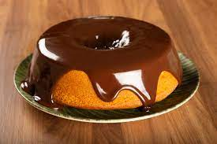

Coloque os ovos, a cenoura, o açucar e o oleo no liquidificador e deixe bater por aproximadamente 2 minutos. Depois, em um refratario, acrescente a farinha de trigo aos poucos e va mexendo sempre, no final coloque o fermento. Unte a forma com manteiga e farinha de trigo, despeje a massa e leve ao forno, asse por 40 minutos. Essa é a melhor receita da vida. Só faça!
